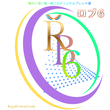
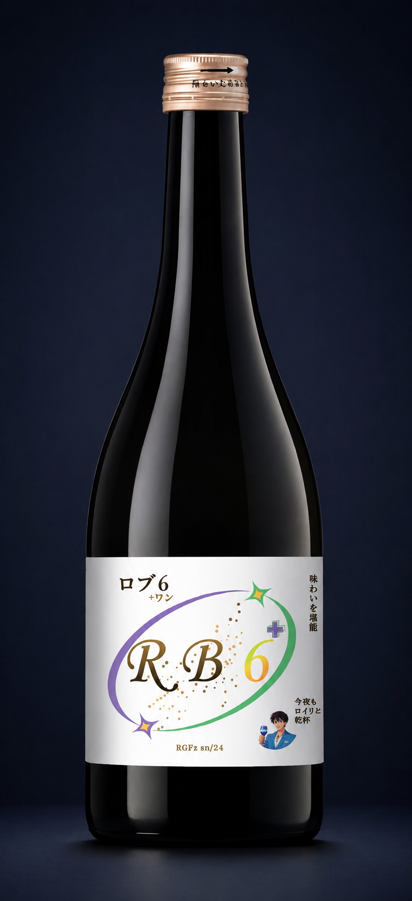
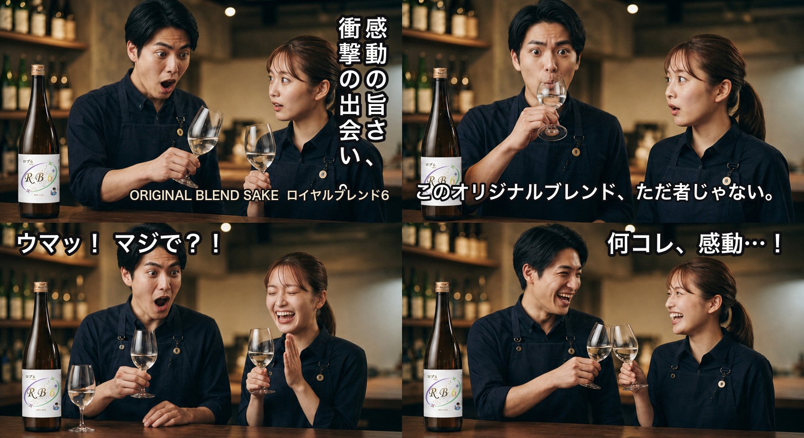
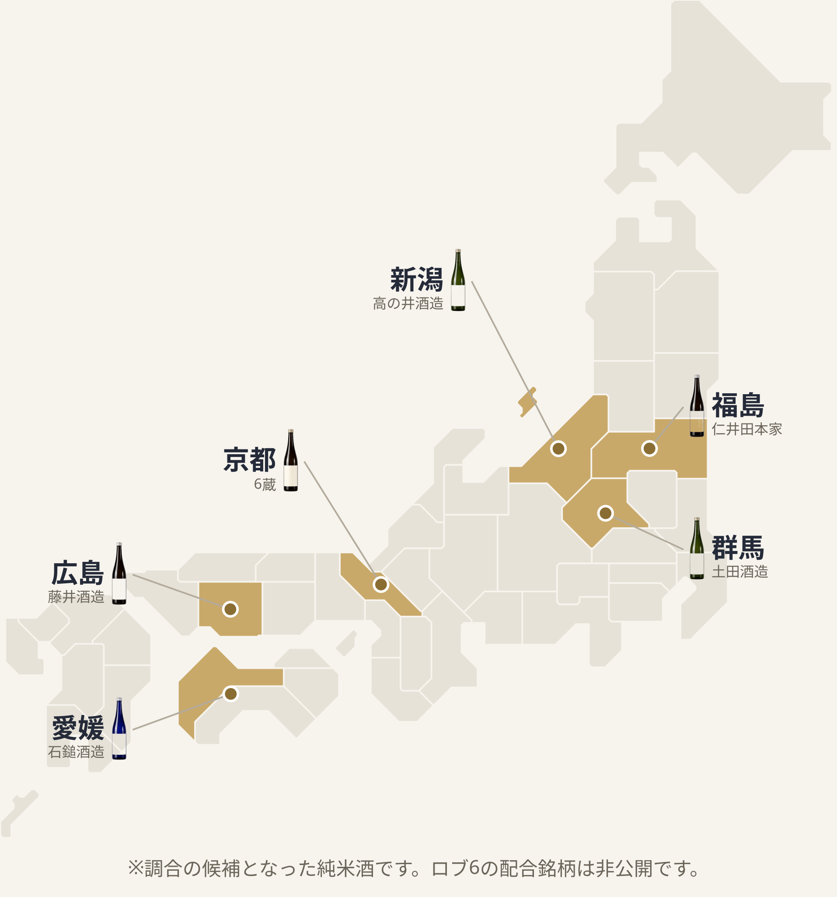
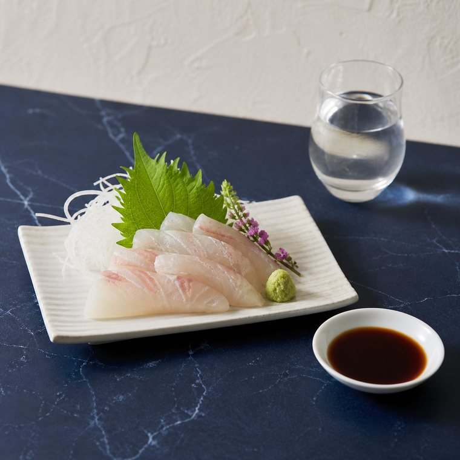
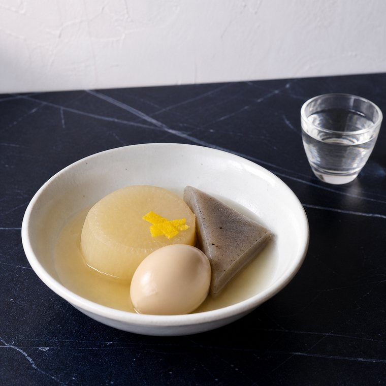
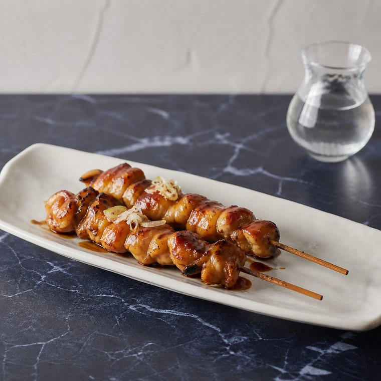
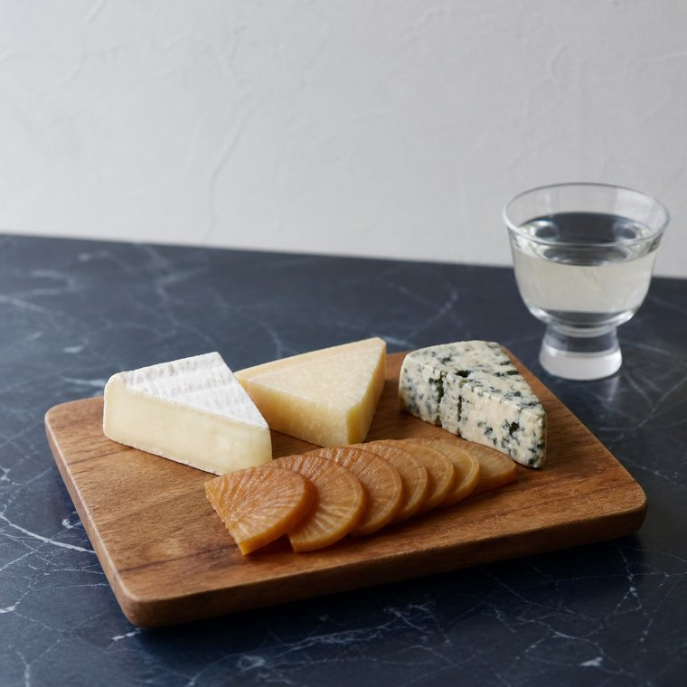
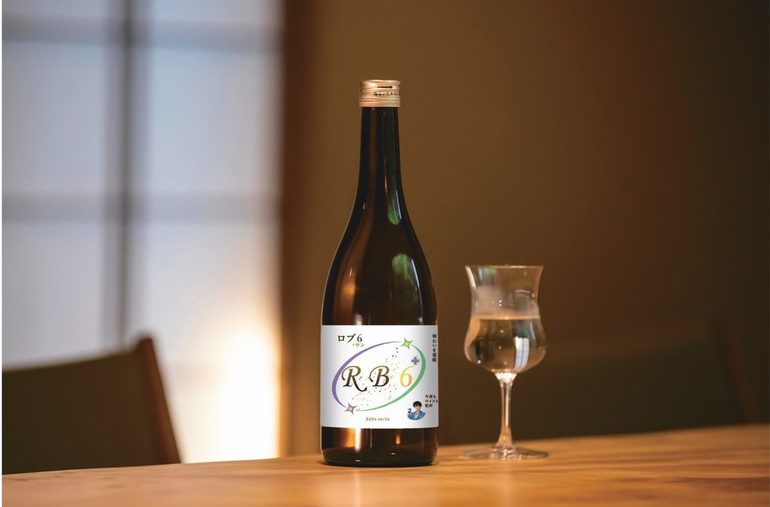

ロイヤルブレンド6単一の酒蔵の限界を超えた、6種の純米酒のアッサンブラージュ。
芳醇濃香、至高の食中酒「ロイヤルブレンド6(ロブ6)」誕生。

ロブ6×2本・ロブ6+1×2本 22,000円(税込・送料無料)

一杯目で、空気が変わる。
しかし、どこか物足りなさを感じていませんか。すっきりと飲みやすいだけの日本酒では、大人のわがままな舌や、趣向を凝らした極上の料理を受け止めきれない。
ロイヤルグリーンフーズのそんな情熱と、ブランドキャラクター「ロイリ」の美学から、日本酒の常識を覆す全く新しい挑戦が始まりました。
「ロブ6」は、従来の単一の酒蔵で造られた日本酒ではありません。ワインの最高峰ボルドーや、ウイスキーの名作が用いる「アッサンブラージュ(芸術的調合)」という手法で生まれた1本です。
仕込み水の代わりに「酒」を使って仕込む、極めて濃厚で贅沢な貴醸酒をベースに採用。圧倒的な旨味の骨格を形成します。
京都の上品な酸味、福島のふくよかな余韻など、気候もこだわりも異なる銘醸地から集めた6つの純米酒。これらを1ml単位で緻密に配合し、調和させることで、口に含んだ瞬間に幾重にも広がる「深く、複雑な味わい」を実現しました。

芳醇濃香でありながら、計算し尽くされた酸味が後味をスッと引き締める。だからこそ、どんな料理にも完璧に寄り添います。

魚の繊細な脂の旨味を、深い複雑味がさらに何倍にも膨らませます。

出汁の旨味と、貴醸酒ベースの豊かな旨味が口の中で究極に調和。

お肉の濃厚なコクに負けない、しっかりとしたボディ感。

発酵食品同士が引き立て合う、計算された大人のマリアージュ。
「今夜も乾杯、ロイリとともに。」
―― ボトルを開けた瞬間、あなたの自宅は特別な空間へと変わります。
国際唎酒師が5問お出しします。答え合わせのたびに、短い解説をお付けします。
ご登録も、お名前の入力もいりません。
※ 1分ほどで終わります。
6種の純米酒をシビアに調合する「ロブ6」は、大量生産ができません。今回の仕込み分が終了しだい、受付を一時締め切らせていただきます。
45歳を過ぎ、本物の味を知るあなたにこそ、この「調和の芸術」を体験していただきたい。ロイリから、今夜だけの特別なご提案です。
※掲載例です。
「単一の蔵では出せない、圧倒的なレイヤー(階層)感」
「最初は『混ぜ物か？』と疑ったが、一口飲んで驚いた。貴醸酒のどっしりとした蜜のような旨味の奥から、京都の綺麗な酸や福島のふくよかさが時間差で押し寄せてくる。ウイスキーのブレンデッドの傑作を飲んでいるような高揚感。これは新しい芸術だ。」
「おでんの出汁と合わせた時、震えました」
「芳醇濃香と聞いて、料理を選ぶかと思いきや、驚くほど懐が深い。出汁の効いた熱々のおでんと合わせると、お酒の甘みと出汁の旨味が完全に同化します。ブルーのボトルとロイリさんの洗練されたデザインも素敵で、ホームパーティーの手土産にも重宝しています。」
「チーズやいぶりがっことのペアリングが最高」
「週末に自宅でゆっくり飲むために購入。さっぱりした白身のお刺身にも合いますが、ブルーチーズや燻製おつまみとの相性が個人的にはダントツ。価格以上の贅沢な時間を過ごせました。またストックを買い足します。」
同じ米から造っても、仕込む水が違えば味わいは変わります。日本酒の歴史を担ってきた三つの土地を、水の性質から見てみます。
六甲山から流れる水にはミネラルが多く含まれます。ミネラルは酵母の働きを助けるため、発酵が活発に進み、しっかりとした飲みごたえのある酒になります。
伏見で汲まれるのは軟水です。発酵はおだやかに進み、口当たりのやわらかい、すっきりとした味わいに仕上がります。
広島の水はミネラルがほとんど含まれません。そのままでは発酵が進みにくく、造るのが難しい水でした。試行錯誤の末に醸造の技術が確立され、この地でも酒が造れるようになりました。
ロブ6は、全国の蔵から選び抜いた六種の純米酒をブレンドしています。ひとつの土地では届かない複雑さは、この違いを重ねることで生まれます。
※ 三つの質問にお答えいただくだけです。ご登録はいりません。
今回の飲み比べ4本セットは送料無料です。
日本酒には明確な賞味期限はございませんが、本製品はデリケートなアッサンブラージュ(調合)を行っているため、お届け後は冷蔵庫(5℃以下)での保管をおすすめします。開栓後は風味が変化しやすいため、2週間以内を目安にお早めにお召し上がりいただくと、本来の豊かな味わいを最も美味しく愉しめます。
本商品は受注生産のため、11月中のお届けを予定しております。受注状況により前後する場合がございます。
ロブ6を2本、ロブ6+1を2本組み合わせた4本セットを、先着10名様へ限定予約販売します。
お問い合わせください。国際配送での対応を準備しております。国際運賃が高額になりますので、お届け先を伺ったうえで、事前にお見積りをお出しします。

ロブ6×2本・ロブ6+1×2本
先着10名様 限定予約販売
22,000円(税込)
4本セット・送料無料
LINEで友だち追加する押すと友だち追加画面が開きます LINEで友だち追加して予約する今回の飲み比べ4本セットは送料無料です。
※ 香港・海外発送についてはお問い合わせください
※ 制作中の画面です。ご用意した質問にお答えします。